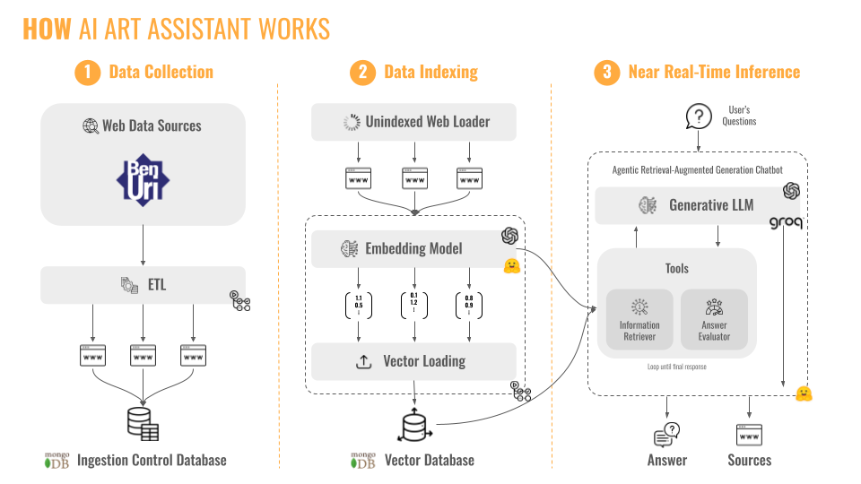
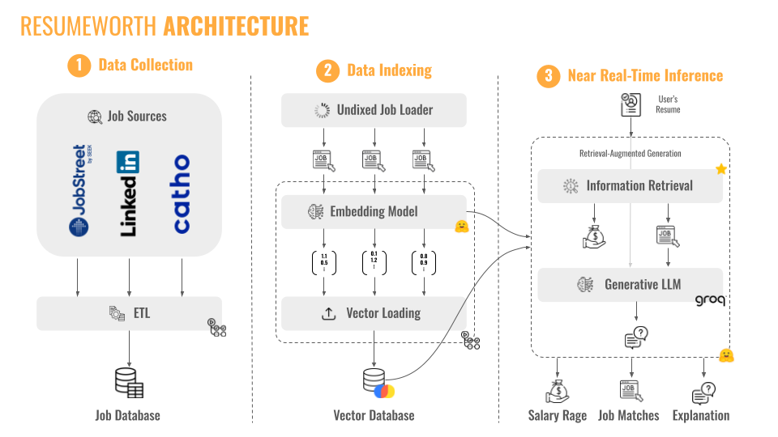
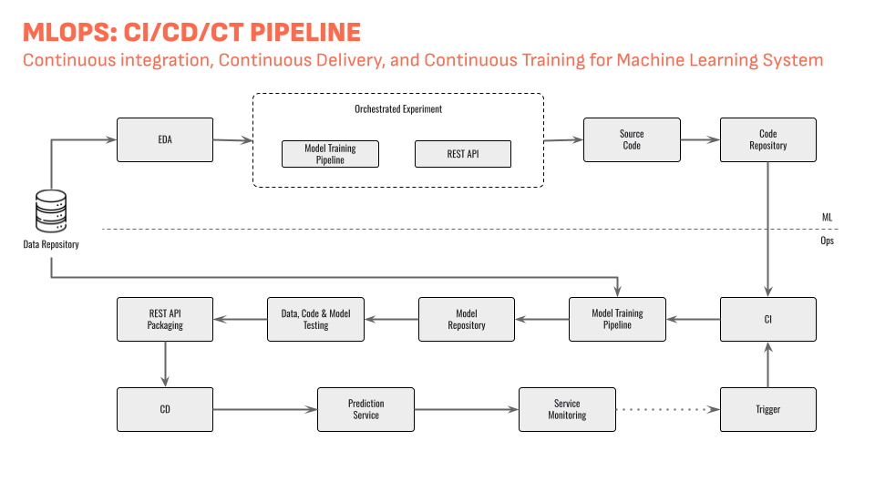
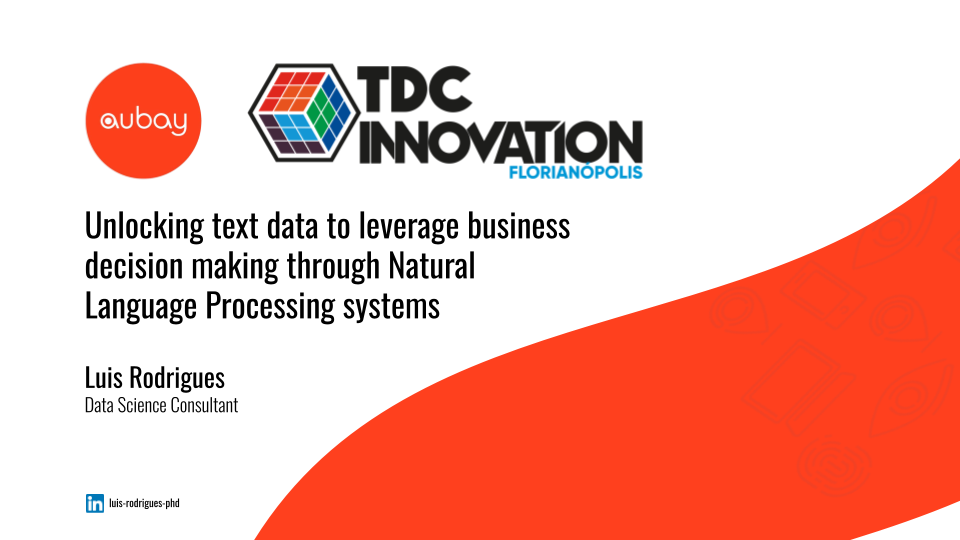

About Me
Welcome to my portfolio! I am a Senior Data Scientist specializing in Generative AI and Retrieval-Augmented Generation (RAG), with over 9 years of experience in Data & AI. My work spans across multiple industries, such as Banking, Retail, and Pharmaceuticals, always focused on delivering impactful AI solutions.
Projects
Agentic RAG Chatbot
The Agentic RAG Chatbot is an AI-powered assistant designed for real-time information retrieval and intelligent response generation. It is currently featured as the AI Art Assistant for Ben Uri Gallery and Museum, helping users explore Jewish, Refugee, and Immigrant contributions to British visual culture.

Project Details
GitHub Repository |
Live Demo on Hugging Face
ResumeWorth App
The ResumeWorth app helps individuals find their true market value through AI-powered analysis of their resumes. It provides personalized salary ranges, job matches, and explanations for job fit, helping users optimize their career opportunities.

Project Details
GitHub Repository |
Live Demo on Hugging Face
ML-Based Text Classification
This case study demonstrates the use of ML for improving customer service through end-to-end text classification. It includes MLOps best practices, ensuring scalability, maintainability, and deployment of a trained model as a REST API.

Project Details
GitHub Repository
TDC Innovation 2023 - NLP Overview
This project contains slides and code from my talk at TDC Innovation 2023, focusing on Natural Language Processing (NLP) and its impact on enhancing business decisions by analyzing text data.

Project Details
GitHub Repository